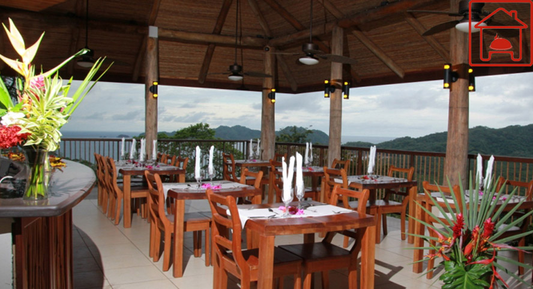

La Casa de Las Delicias le e invita a disfrutar de deliciosos platos con el exquisito y tradicional sabor de la cocina Típica Costarricense.
Podrás disfrutar de nuestra comida al lado de sus familiares o amigos en un acogedor ambiente.